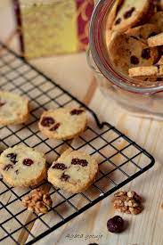
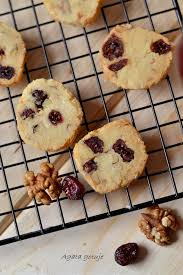
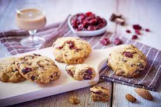
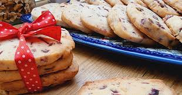

Przygotowanie
- Miękkie masło utrzeć z cukrem pudrem na gładką masę. Dodawać jajka na przemian z mąką i proszkiem do pieczenia. Zmniejszyć obroty. Na samym końcu dodać posiekane pistacje i żurawinę. Delikatnie wymieszać.
- Przygotowane ciasto wyłożyć na blat, podzielić na 2 równe części. Z każdej części uformować wałek o średnicy ok 8 cm. zawinąć w folię spożywczą i włożyć do lodówki na ok 2 godziny.
- Po tym czasie schłodzone ciasto pokroić na 0,5 cm kawałki i ułożyć na blaszce do pieczenia. Piec w temp 190 stopni przez 10-12 min.
- Schłodzone ciasteczka zdjąć z blaczki.


Polewa:
- Biała czekoladę rozpuścić w kąpieli wodnej, dodać olej kokosowy. Wymieszać.
- Ciasteczka zanurzyć do połowy w czekoladzie i posypać żurawiną i pistacjami.